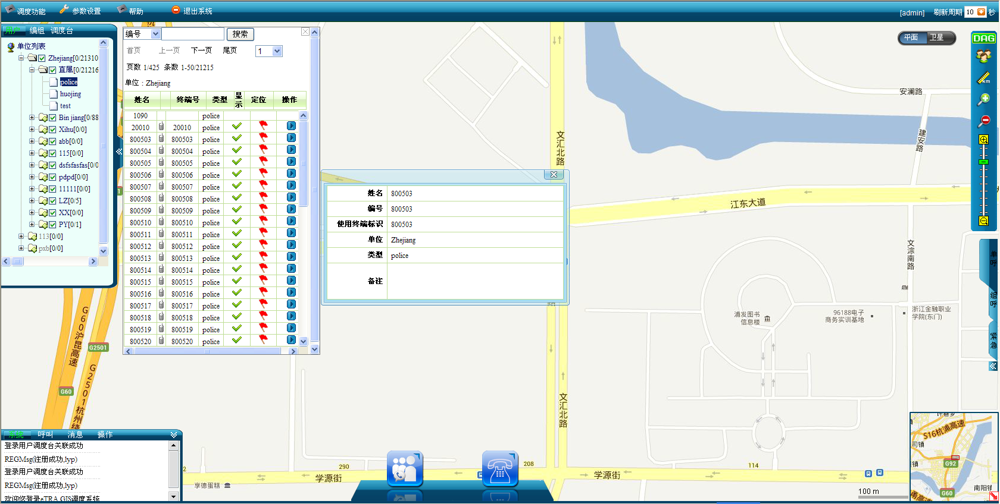
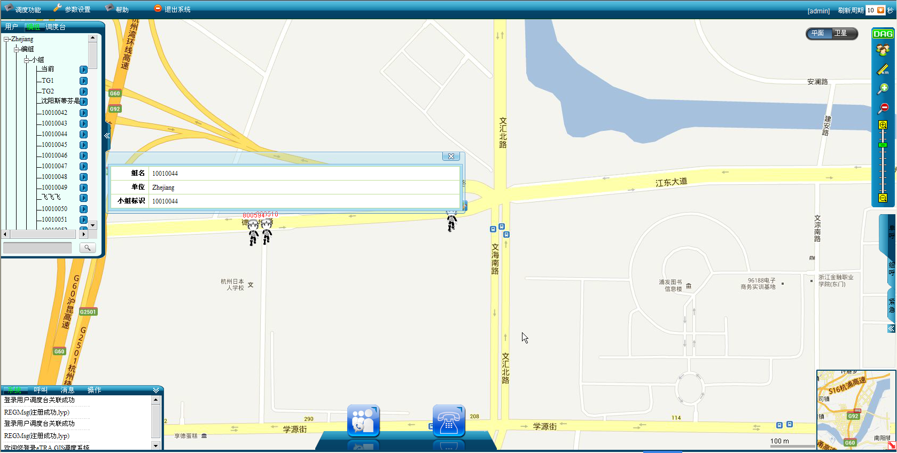
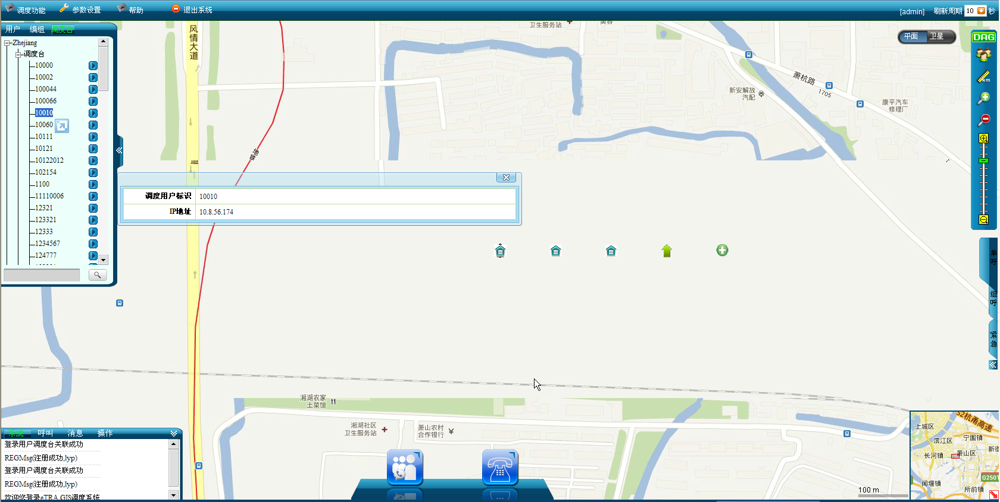
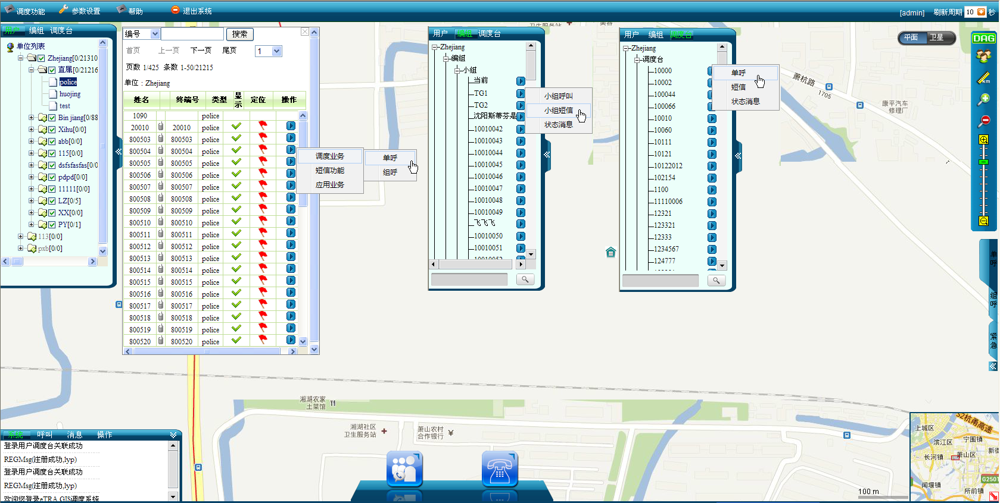

只在调度用户登录界面，才能显示成员树。因此所有的针对成员树的操作，首先要确认调度用户成功登陆GIS系统。
在成员树区域中可进行如下操作：
成员树是按照行政体系的树形结构设计的，在成员树中，可直观显示各个单位级别的所属关系，同时可迅速查看各个单位及子单位内的用户、编组及调度台详细信息，也可对用户进行设置和定位。
1）查找用户并查看其信息：先在成员树的用户标签列表上找到单位并单击该单位名称，界面右边窗口就会跳出这个单位下所有的用户列表，可在用户列表页面输入用户姓名进行搜索，找到目标用户后，再单击该用户名，弹出用户信息对话框，如下图1所示。

图1. 查找并查看用户信息
2）查找编组并查看其信息：先在成员树上切换到编组标签，在标签页底部输入编组名称，进行搜索，找到目标编组，然后单击该编组名，弹出编组信息对话框，如下图2所示。

图2. 查找并查看编组信息
3）查找调度台并查看其信息：先在成员树上切换到调度台标签，在标签页底部输入调度台名称，进行搜索，找到目标调度台，然后单击该调度台名称，弹出调度台信息对话框，如下图3所示。

图3. 查找并查看调度台信息
在GIS界面上打开成员树，如在成员树上查找用户、编组和调度台并查看用户、编组和调度台信息所述，选中用户或编组或调度台，单击对应的扩展键，可选择相应的调度业务，执行各种调度功能，如下图4所示。

图4. 成员树选择调度业务
成员树中，用户、编组、调度台可选择的调度功能是不同的：
在成员树中可显示单位在线用户数量。若当前已注册且正常上报GPS的有：单位“杭州公安局”（总人数为20人）下有10人，单位“滨江公安局”（总人数为15人）下有5人，则打开成员树，单击“用户”项，可以看到在单位“杭州公安局”后面有［10/20］，即表示该单位当前有10人在线，同样，在其下级单位“滨江公安局”后面有［5/15］。
Copyright © 2012 Eastcom, Inc. All rights reserved. |
||